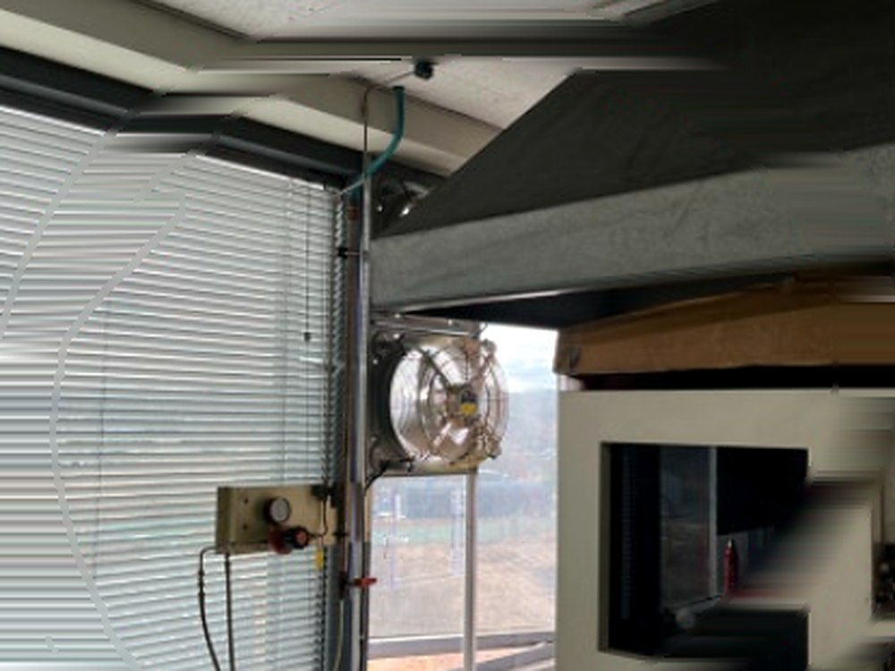
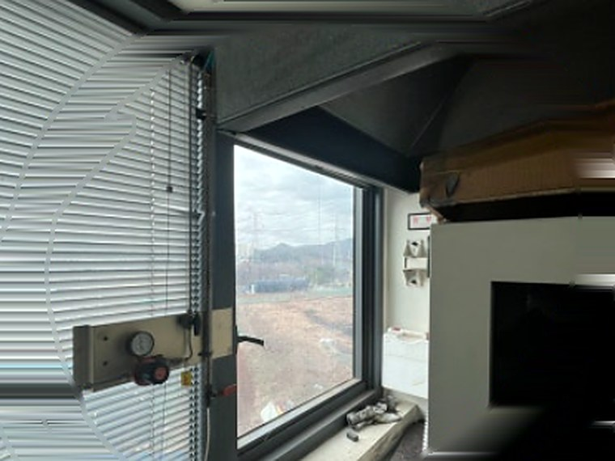

실험실 창문 배기 환풍기 설치
실험실은 냄새가 나는 정도의 문제가 아닙니다. 약품 증기가 실내에 머무는 시간을 줄이는 것이 목적입니다. 프로젝트창을 열고 환풍기를 켜면 그 즉시 공기가 밖으로 빠지도록 경로를 잡았습니다.
- 현장
- 실험실 · 연구 공간
- 시공 내용
- 창문 상부 배기 환풍기 설치
- 소요 시간
- 당일 완료
- 중점 사항
- 즉시 배기 · 프로젝트창 급기

시공 완료 후 실험실 창문 상부
실험실 환기는 속도의 문제입니다
일반 사무실이나 창고는 공기가 조금 탁해도 시간을 두고 갈아주면 됩니다. 실험실은 다릅니다. 약품을 다루는 순간 증기가 나오고, 그 증기가 실내에 머무는 시간 자체를 줄여야 합니다.
실험실 환풍기를 찾으시는 분들이 공통적으로 말씀하시는 상황이 있습니다. 시약을 열거나 반응을 시킬 때 냄새가 확 올라오는데, 창을 열어도 금방 빠지지 않고 한참 남아 있다는 것입니다. 공기가 나갈 길이 정해져 있지 않으면 실내를 맴돌기만 합니다.
그래서 이 현장의 목표는 처음부터 분명했습니다. 필요할 때 켜면 그 자리에서 바로 빠져나가는 경로를 만드는 것이었습니다. 상시로 약하게 도는 방식이 아니라, 작업하는 순간 강하게 빼내는 방식입니다.
시공 전 현장 상태
창은 있었습니다. 위쪽이 바깥으로 젖혀지는 프로젝트창 구조라 열면 공기가 통하기는 했습니다. 문제는 그것뿐이었다는 점입니다.
창만 열어두면 공기는 바람이 부는 날에만 움직입니다. 정작 약품을 다루는 그 순간에 바람이 분다는 보장이 없습니다. 배기 설비가 없으면 언제 빠질지 알 수 없는 환기가 됩니다.
실내에는 블라인드와 배관, 계기류가 창 주변에 자리 잡고 있었습니다. 설치 위치를 정할 때 이것들을 피해야 하는 조건이 있었습니다.

시공 전프로젝트창을 급기구로, 창 상부를 배기구로
가장 먼저 정한 것은 들어오는 공기와 나가는 공기의 역할 분담입니다. 배기만 강하게 해도 들어올 곳이 없으면 공기는 움직이지 않습니다. 빨대를 꽂은 컵의 입구를 손으로 막고 빨면 아무것도 올라오지 않는 것과 같습니다.
이 현장은 프로젝트창이 있어 답이 쉬웠습니다. 창을 젖혀 열면 그 자체가 급기구가 됩니다. 그래서 창을 열고 환풍기를 켜는 것을 한 동작으로 묶었습니다. 창을 열면 들어오고, 환풍기가 밀어내면 나갑니다.
배기 위치는 창 상부로 잡았습니다. 약품 증기와 더운 공기는 위로 올라가기 때문에, 높은 자리에서 뽑아야 실제로 그 공기가 나갑니다. 아래쪽에서 뽑으면 이미 가라앉은 공기를 빼내게 됩니다.
본체는 창틀 구조물에 물려 고정하고, 블라인드와 기존 배관·계기류에 닿지 않는 자리를 골랐습니다. 전원선은 천장을 따라 정리해 작업 동선에 걸리지 않게 했습니다.
약품을 다루는 공간의 전기 작업은 자격을 갖춘 인력이 진행합니다. 배선을 임의로 늘리거나 접지를 생략하면 위험합니다.
시공 완료
창을 젖혀 열고 환풍기를 켜면 실내 공기가 곧바로 창 상부로 빠져나갑니다. 냄새가 올라올 때 바로 대응할 수 있게 됐습니다.
작업이 끝난 뒤에도 몇 분 더 돌리시도록 안내드렸습니다. 냄새가 사라진 것처럼 느껴져도 공기는 아직 남아 있습니다.
가동 상태에서 배출 흐름과 소음, 진동을 함께 확인하고 마쳤습니다. 창을 여닫을 때 본체나 배선에 닿는 곳이 없는지도 반복해서 확인했습니다.
이 현장의 핵심
- 프로젝트창을 급기구로, 창 상부를 배기구로 역할 분리
- 증기가 모이는 상부에서 배기해 실제로 나가는 구조
- 창을 열고 켜면 즉시 배출 — 필요한 순간에 쓰는 방식
- 블라인드·배관·계기류를 피한 위치 선정
- 창 개폐 시 본체·배선 간섭 없음을 반복 확인
자주 묻는 질문
국소배기장치(흄후드)와 무엇이 다른가요?
국소배기장치는 발생원 바로 앞에서 유해물질을 포집해 전용 덕트로 내보내는 설비로, 법으로 설치·검사 기준이 정해져 있는 경우가 있습니다. 이번 시공은 실내 전체 공기를 빠르게 갈아주는 전체 환기에 해당합니다. 취급 물질에 따라 국소배기장치가 필요한 경우가 있으니, 해당 여부는 관련 기준을 확인하시는 것이 안전합니다.
프로젝트창이 아니어도 설치가 되나요?
됩니다. 창이 열리는 구조면 그 창을 급기 경로로 쓰고, 고정창이거나 창이 없으면 벽부형으로 배기를 만들고 급기는 문 하부나 별도 루버로 확보합니다. 창 사진 한 장이면 어느 쪽인지 판단됩니다.
연구실 환기, 얼마나 돌려야 하나요?
작업 중에는 계속, 작업이 끝난 뒤에도 몇 분 더 돌리시는 편이 좋습니다. 냄새가 느껴지지 않는다고 공기가 다 나간 것은 아닙니다.